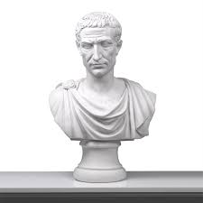
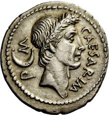

| Logro | Descripción |
|---|---|
| Conquista de la Galia | Derrotó a las tribus galas y expandió el territorio romano hasta el Atlántico. |
| Cruce del Rubicón | Inició la guerra civil al cruzar el río Rubicón con su ejército (49 a.C.). |
| Victoria en la guerra civil | Derrotó a Pompeyo y sus aliados, consolidando su poder en Roma. |
| Reformas políticas y sociales | Aumentó el número de senadores, mejoró la administración y repartió tierras. |
| Reforma del calendario | Introdujo el calendario juliano, base del calendario moderno. |
| Dictador vitalicio | Fue declarado dictador perpetuo en 44 a.C., concentrando el poder absoluto. |
| Expansión del Senado | Amplió el número de senadores para integrar más regiones del Imperio. |
| Alianza con Cleopatra | Fortaleció la relación con Egipto y tuvo un hijo con ella, Cesarión. |
| Imagen | Descripción |
|---|---|
|  | Julio César (100 a.C. - 44 a.C.) fue un político, general y dictador romano. Su ambición y carisma lo llevaron a escalar rápidamente en la política romana. Fue clave en la caída de la República y el nacimiento del Imperio Romano. |
|  | En su tiempo, Julio César ordenó acuñar monedas con su rostro, algo inusual para los estándares republicanos. Este gesto fue interpretado como una declaración de poder personal sobre el estado. |
| Fue asesinado el 15 de marzo del 44 a.C. (los Idus de marzo) por un grupo de senadores, entre ellos su protegido Bruto. Este acto fue motivado por el temor de que se proclamara rey y acabara con la República. | |
 |
Durante sus campañas en la Galia, César ordenó construir un puente sobre el río Rin en solo diez días, demostrando el poder logístico y técnico del ejército romano. Fue una muestra de fuerza ante las tribus germánicas. |